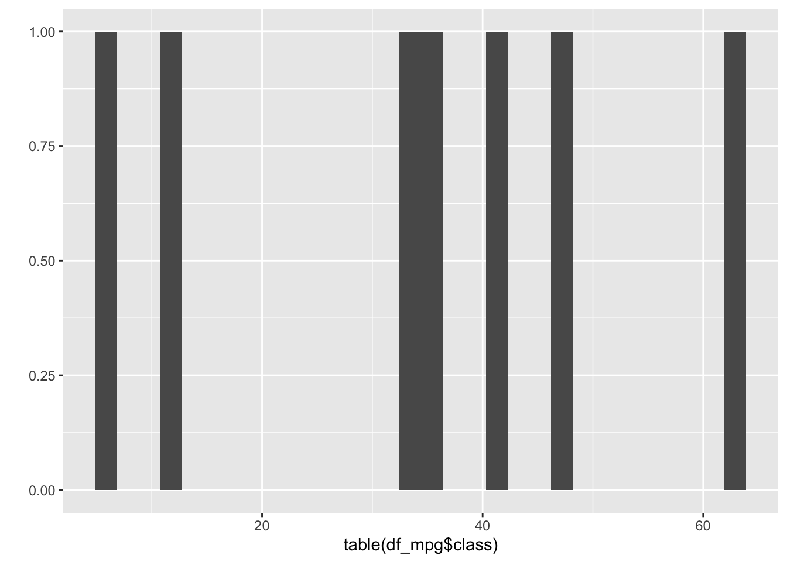

Chapter 2 Exploratory Data Analysis
EDA(Exploratory Data Analysis) is necessary for data analyst to check the dataset before statistical modeling(or machine learning)
2.1 head and tail
df_mpg <- data.frame(ggplot2::mpg)
head(df_mpg)## manufacturer model displ year cyl trans drv cty hwy fl class
## 1 audi a4 1.8 1999 4 auto(l5) f 18 29 p compact
## 2 audi a4 1.8 1999 4 manual(m5) f 21 29 p compact
## 3 audi a4 2.0 2008 4 manual(m6) f 20 31 p compact
## 4 audi a4 2.0 2008 4 auto(av) f 21 30 p compact
## 5 audi a4 2.8 1999 6 auto(l5) f 16 26 p compact
## 6 audi a4 2.8 1999 6 manual(m5) f 18 26 p compactwe have loaded mpg dataset from ggplot2 package. ggplot2 contains multiple useful datasets and various visualization tools.
head function extract top 6 rows of input dataset. In contrast, we can extract bottom 6 rows using tail function.
tail(df_mpg)## manufacturer model displ year cyl trans drv cty hwy fl class
## 229 volkswagen passat 1.8 1999 4 auto(l5) f 18 29 p midsize
## 230 volkswagen passat 2.0 2008 4 auto(s6) f 19 28 p midsize
## 231 volkswagen passat 2.0 2008 4 manual(m6) f 21 29 p midsize
## 232 volkswagen passat 2.8 1999 6 auto(l5) f 16 26 p midsize
## 233 volkswagen passat 2.8 1999 6 manual(m5) f 18 26 p midsize
## 234 volkswagen passat 3.6 2008 6 auto(s6) f 17 26 p midsizeIt’s important to check rows in this way, because most of dataset we meet are so large that it can’t be shown just in one page.
2.2 dim and str
using dim function, we can check the size of dataset. The size means rows x columns.
dim(df_mpg)## [1] 234 11This mpg dataset has 234 rows and 11 columns(features).
We do not need to use this function just for check entire dataset.
dim(head(df_mpg))## [1] 6 11dim(df_mpg[,2:4])## [1] 234 3dim(df_mpg['model'])## [1] 234 1but we can’t use dim for 1-dim vector. Note that df_mpg[‘model’] is not a vector, it’s dataframe yet.
str(df_mpg['model'])## 'data.frame': 234 obs. of 1 variable:
## $ model: chr "a4" "a4" "a4" "a4" ...It’s different from df_mpg$model
str(df_mpg$model)## chr [1:234] "a4" "a4" "a4" "a4" "a4" "a4" "a4" "a4 quattro" "a4 quattro" ...This is vector. And it’s same with df_mpg[[‘model’]]
str(df_mpg[['model']])## chr [1:234] "a4" "a4" "a4" "a4" "a4" "a4" "a4" "a4 quattro" "a4 quattro" ...2.3 summary
we can check summary statistics using summary function.
summary(df_mpg)## manufacturer model displ year
## Length:234 Length:234 Min. :1.600 Min. :1999
## Class :character Class :character 1st Qu.:2.400 1st Qu.:1999
## Mode :character Mode :character Median :3.300 Median :2004
## Mean :3.472 Mean :2004
## 3rd Qu.:4.600 3rd Qu.:2008
## Max. :7.000 Max. :2008
## cyl trans drv cty
## Min. :4.000 Length:234 Length:234 Min. : 9.00
## 1st Qu.:4.000 Class :character Class :character 1st Qu.:14.00
## Median :6.000 Mode :character Mode :character Median :17.00
## Mean :5.889 Mean :16.86
## 3rd Qu.:8.000 3rd Qu.:19.00
## Max. :8.000 Max. :35.00
## hwy fl class
## Min. :12.00 Length:234 Length:234
## 1st Qu.:18.00 Class :character Class :character
## Median :24.00 Mode :character Mode :character
## Mean :23.44
## 3rd Qu.:27.00
## Max. :44.00If column is categorical variable, like model, trans, drv, manufacturer, fl, class, it just shows Length, Class and Mode. But in case of numerical, it can shows mean of variable, median of variable, minimum of variable, maximum of variable and 1st and 3rd quartile.
2.4 table
And R also provides a frequency table. We can use this as call table function.
table(df_mpg$model)##
## 4runner 4wd a4 a4 quattro
## 6 7 8
## a6 quattro altima c1500 suburban 2wd
## 3 6 5
## camry camry solara caravan 2wd
## 7 7 11
## civic corolla corvette
## 9 5 5
## dakota pickup 4wd durango 4wd expedition 2wd
## 9 7 3
## explorer 4wd f150 pickup 4wd forester awd
## 6 7 6
## grand cherokee 4wd grand prix gti
## 8 5 5
## impreza awd jetta k1500 tahoe 4wd
## 8 9 4
## land cruiser wagon 4wd malibu maxima
## 2 5 3
## mountaineer 4wd mustang navigator 2wd
## 4 9 3
## new beetle passat pathfinder 4wd
## 6 7 4
## ram 1500 pickup 4wd range rover sonata
## 10 4 7
## tiburon toyota tacoma 4wd
## 7 7table(df_mpg$class)##
## 2seater compact midsize minivan pickup subcompact suv
## 5 47 41 11 33 35 62It’s helpful to check counts of each values in variable. To better use, we can use this table with visualizing original variable.
qplot(df_mpg$class) You should be careful to visualize the table as it is. If you visualize the table, it shows the different one.
You should be careful to visualize the table as it is. If you visualize the table, it shows the different one.
qplot(table(df_mpg$class))## Don't know how to automatically pick scale for object of type table. Defaulting to continuous.## `stat_bin()` using `bins = 30`. Pick better value with `binwidth`.